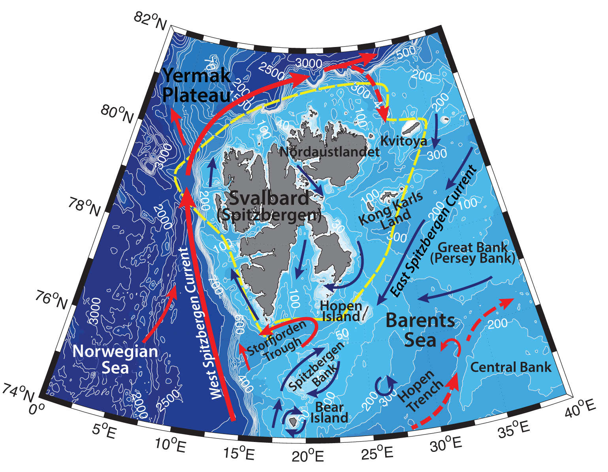

Schematic water circulation patterns and geographical place names in the Svalbard region. Adopted from Pfirman et al., 1994; Ozhigin et al.,2000. Dashed line marks the studied region.
Barents Sea is the largest Arctic shelf sea and one of the most studied seas in the Arctic Ocean (Lien & Trofimov, 2013). It is a transition region for approximately half of all the Atlantic water, entering Arctic Ocean. Due to shallow topography waters of the Barents Sea are subject to high temporal and spatial variability.
Characteristics of the inflowing Atlantic water (AW) vary on both seasonal and decadal scales. Loeng (1991) has described the inflow of Atlantic water into the Barents Sea between Bear Island and Norwegian coast to be 3.5 – 6.5 °C, with salinity greater than 35. Relatively warm and saline Atlantic water from the Norwegian Atlantic Current in the Norwegian Sea bifurcates into two branches at the entrance to the Barents Sea – one flows to the north along Svalbard (Spitzbergen) coast through the Fram Strait around the Yermak Plateu (T>0°C, 34.75<S<34.9; known as West Spitzbergen Current or Fram Strait Branch Water – FSBW; Lien & Trofimov, 2013), another turns east onto the Barents Shelf (the North Cape Current – NCaC, also known as Nordkapp Current or Barents Sea Branch Water – BSBW; e.g., Zubov, 1933; Ingvaldsen, 2005). The volumes of the two branches are thought to be comparable (Lien & Trofimov, 2013). West Spitzbergen Current is estimated to carry between 2 and 3.7 Sv of Atlantic water. Different studies estimate the volume of Atlantic Water inflow between Norway and Bear island to be from 1.4 Sv in summer to 2.1 Sv in winter (Loeng et al., 1993). In the Western Barents Sea the North Cape Current splits into several branches: one branch proceeds eastwards parallel to the coast (and is known as Murman Current after 30 °E; Loeng, 1991), while the other turns north along the Hopen Trench. Some of the latter recirculates in the trench and can leave Barents Sea south of Bear Island as a topographically trapped westward current. On their way further eastwards AW submerge below the lighter Arctic Water and continue as intermediate current at 50-200 m depth (Loeng, 1991; Ingvaldsen, 2005).
In the northern Barents Sea cold and fresh (T<-1°C, 34.3<S<34.7; e.g. Lien & Trofimov, 2013) Arctic Surface Water enters the shelf between Svalbard and Franz Josef Land, between Svalbard and Nordaustlandet through Hinlopen strait, as well as between Frans Josef Land and Novaya Zemlya. This fresh inflow continues southwards and southwestwards along the coast of Spitsbergen as the East Spitsbergen, Bear Island Channel, and Persey currents (Loeng, 1991; Pfirman et al., 1994). ASW can occupy up to 150 m of the water column during wintertime. During summertime even fresher (varying from below 31.0 and up to 34.2; Loeng, 1991) water from the melting of sea ice overlays the Arctic Water, occupying the top 5-20 m of the water column.
The front between the Arctic and Atlantic waters in the Barents Sea is known as the Polar Front. The Polar Front stretches across the Barents Sea along the western coast of Svalbard and to the south of the archipelago (Pfirman et al., 1994). The position of the Polar Front in the central Barents Sea varies in phase with the climate of the Barents Sea and is determined by the barotropic circulation of AW and is strongly tied to topography (e.g. Dobrovolskyi, Zalogin, 1982; Ingvaldsen, 2005). The mean position of the Front is believed to be around 260 m isobath, but during warm and windy conditions it may move upslope – e.g. a difference of 130 km has been observed in the northward extent of AW (Ingvaldsen, 2005). This is in line with the fact that area just to the south of Bear Island has been observed to be in phase with the temperature in the Atlantic core and the NAO index (Ingvaldsen, 2005).
Climatic variations in the Barents Sea highly depend on the activity and properties of the inflowing Atlantic Water, which in turn is largely driven by the regional wind field. Stronger winds enhance transports and result in a warmer current both in the Norwegian and the Barents Seas. Under the influence of strong winds the Norwegian Atlantic Current becomes narrower, while the NCaC becomes warmer and wider at the same time. During the warm periods, the NCaC can have two cores current system, while during cold periods it is a one-core system with wider core. The reason for the fluctuations in the width of the NCaC, is the generally non-uniform wind field across the current (Ingvaldsen, 2005).
The position of the Polar Front, in turns, dictates the distribution of Arctic and Atlantic species of zooplankton, while the long-term variations of the front are reflected in the patterns of benthos (e.g. Orlova et al., 2014; Pisareva et al., 2015a). The ongoing changes in the Atlantic inflow, sea ice extent, water mass distribution and oceanic fronts influence the phytoplankton blooms in the Barents Sea (e.g. Oziel et al., 2017). Heat from the Atlantic Water can melt drifting ice and allow for an early phytoplankton bloom at the ice edge (Loeng 1991).
On the banks in the Barents Sea gyres can be formed, enhancing the transformations of various waters locally on the Barents shelf. For example, during summertime between transformed Arctic water on the Spitzbergen bank (mixed with heated melt water, resulted with 1<T<3°C and rather low salinity) and the Arctic Water to the east a Summer Front can be formed (Loeng, 1991).
The Fram Strait Branch Atlantic Water (T>0°C, S>34.75; Lien & Trofimov, 2013) that enters the Nansen Basin cools on its way northwards. In the Arctic Basin it is advected eastwards in a largescale cyclonic boundary current along the continental slope. As it flows eastwards FSBW subducts below the cold halocline layer and forms a subsurface temperature and salinity maximum. The upper boundary of AW, which is considered to be isotherm of 0 °C resides at approximately 100-150 m depth (Rudels and Friedrich, 2000). Some of the FSBW enters the Barents Sea from the north through submarine valleys and canyons – into the straits between Svalbard, Nordaustlandet, Kvitoya and Viktoria islands (e.g. Matishov et al. 2009; Loeng et al. 1993; Schauer, Loeng et al. 2002; Lien & Trofimov, 2013) They can bring nutrients and zooplankton to the shelf via upwelling through the troughs.
Cold and dense Barents Sea Water (BSW; -1.9<T<5°C, 34.5<S<35.2), forms on the northeastern Barents Shelf via winter cooling and salinization (transformation of the Atlantic Water as well) due to the brine rejection during ice formation, especially on the banks (e.g. on the Central, Great, Novaya Zemlya, Spitsbergen banks) of the sea, in the area around Franz Josef Land and Spitzbergen archipelagos (e.g. Martin & Cavalieri 1989), as well as in leads and flaw polynyas (Midttun, 1985). It is known to flow from the shelf into the Arctic Basin through St. Anna Trough and contribute to the deep waters of the Arctic Ocean, or occupy the deepest parts of the sea, where it is known as Bottom Barents Sea Water (also known as Cold Deep Water; CDW; Midttun L., 1985; Lien & Trofimov, 2013; Pfirman et al., 1994). The vertical mixing that happens during wintertime is crucial for bringing the nutrients up to the surface for the development of spring blooms. Winter convection often reaches the bottom on the shelf, however in the deep Arctic basin it is not possible due to large salinity gradients. There freezing of the ice causes brine rejection, which in turn aggregate underneath the ice forming the halocline, which prevent the heat from underlaying Atlantic water reach the surface (Loeng 1991).
Oceanography of Svalbard fjords is prone to large variability on smaller scales as well under the influence of freshwater input from the archipelago, winds, tides and other changes in the ambient density fields. While the believed fundamental mode of circulation is a fresher outflow (due to coastal discharge) of the surface waters with a deeper oceanic compensation current (e.g. Farmer & Freeland, 1983), due to the constrained topography of the Svalbard fjords oftentimes the unstable modes of circulation prevail. For example, Fer and Widell (2007) have shown that mixed semi-diurnal tide switches the circulation in Van Mijenfjorden from the cyclonic to anticyclonic due to the strong inflow through the Akselsundet strait. Unfortunately, the in-situ data in the fjords is often limited, due to remoteness, harsh winter conditions and sea ice.
Transpolar drift carries ice across the Arctic Basin towards Fram Strait, hence ice floes influence the structure and dynamics of surface waters in the Northern Barents Sea. During warm season glaciers contribute fresh meltwater to the surface layer of the Svalbard region, as well as influence the hydrochemical structure (Ozhigin et al., 2000). The relatively high temperatures of the Atlantic Water in the northern Barents Sea contribute to keeping the region ice-free throughout the year (Lien & Trofimov, 2013).